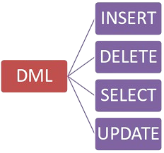

DML (Data Manipulation Language) |
Inicio | ||||||||
|  | |||||||||
|
DML, que significa Data Manipulation Language, é um subconjunto da linguagem SQL utilizado para trabalhar com os dados armazenados em tabelas de um banco de dados. A manipulação de dados é essencial em qualquer sistema que dependa de informações armazenadas. Por isso, a DML está presente em praticamente todas as aplicações que utilizam banco de dados, desde cadastros simples até sistemas bancários complexos. Os comandos que compõem a DML são: INSERT, SELECT, UPDATE e DELETE. INSERT:O comando INSERT é usado para adicionar novos dados à tabela. Sempre que um novo registro precisa ser criado, utilizamos o INSERT INTO seguido do nome da tabela, os nomes das colunas e os respectivos valores a serem inseridos. Ex:
INSERT INTO clientes (nome, idade, cidade)
VALUES ('João', 25, 'São Paulo'); Com isso, uma nova linha é criada na tabela com os dados informados. |
|||||||||
SELECT:Já o comando SELECT é utilizado para consultar os dados armazenados no banco. É o comando mais utilizado em SQL, pois através dele conseguimos visualizar as informações contidas nas tabelas. Com o SELECT, podemos buscar todos os registros ou apenas alguns campos específicos, além de aplicar condições, ordenar resultados ou limitar a quantidade de dados exibidos. Ex:
SELECT * FROM clientes;
Se quiser uma condição especifica:
SELECT * FROM clientes WHERE idade > 40
Se quiser ver apenas o nome e a cidade:
SELECT nome, cidade FROM clientes;
|
|||||||||
UPDATE:Para atualizar dados já existentes, usamos o comando UPDATE. Ele permite modificar valores de uma ou mais colunas, em registros específicos. Se caso usado sem o filtro WHERE, ele pode alterar todos os registros da tabela. Ex:
UPDATE clientes
SET cidade = "São Paulo" FROM nome = "Jonas" |
|||||||||
DELETE:O comando DELETE é usado para remover registros da tabela. Assim como o UPDATE, o DELETE precisa ser usado com cuidado. Se o WHERE for omitido, todos os registros da tabela serão apagados. Ex:
DELETE FROM clientes
WHERE nome = "Jonas" |
|||||||||
TRANSAÇÕES:a DML também pode ser utilizada em conjunto com transações, que são blocos de comandos executados de forma segura. Com o uso de transações, garantimos que um conjunto de alterações só será realizado se tudo funcionar corretamente. Isso é útil em situações como transferências bancárias, onde precisamos garantir que o valor saia de uma conta e entre em outra, sem erros no processo. Ex:
START TRANSICTION
UPDATE contas SET saldo = saldo - 100 WHERE id = 1 UPDATE contas SET saldo = saldo + 100 WHERE id = 2 COMMIT; |
|||||||||
| Próximo»» | |||||||||